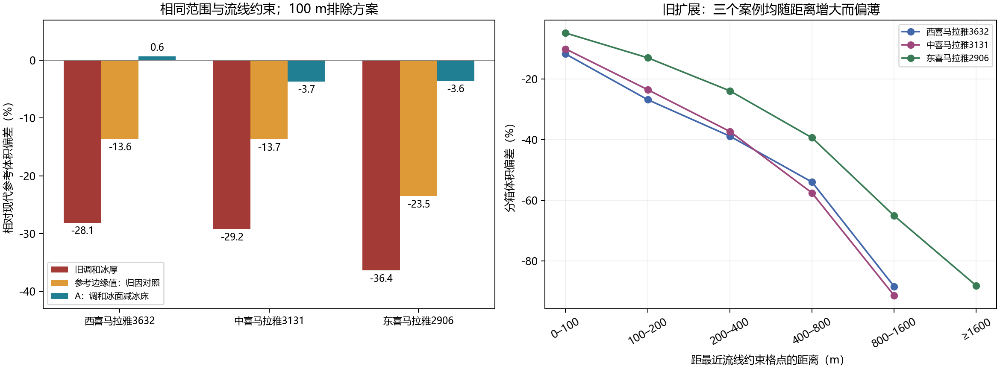

2026-10-21。补丁已在本地独立研究分支应用；原生产代码保持。
结论：A大幅改善现代参考总体积的一致性，但仍有23–33 m的原始冰面插值RMSE与3.6%–10.7%的负冰厚截断，不能仅凭总体积误差直接推广生产。C的跨冰川常数q转移失败。旧偏差同时包含边缘条件向内部传播和厚度空间形状未恢复，不能全部归为“横断面呈三角形”。
本机oggm_env2运行：原8项测试及1项负高程回归测试共9项通过；7组合成体积偏差与附件最大差异约8.3×10⁻¹³个百分点。真实诊断采用原先冻结的3131、2906、3632，原网格和流线采样位置，排除距离0/100 m两方案。主诊断约26.5秒，无新小冰期重建、气候或动力模拟。
| 案例 | 旧体积偏差 | A体积偏差 | A原始冰面RMSE | A负冰厚格点 | C留一转移偏差 |
|---|---|---|---|---|---|
| 西喜马拉雅3632 | -28.15% | 0.65% | 23.3 m | 3.58% | -15.49% |
| 中喜马拉雅3131 | -29.23% | -3.69% | 28.5 m | 10.70% | -7.43% |
| 东喜马拉雅2906 | -36.40% | -3.58% | 33.3 m | 6.76% | 197.93% |
A的冰面RMSE以非边缘内部格点、相对现代DEM计算；负冰厚比例以全冰川掩膜格点为分母。负值被截为零会提高体积，原始未截断偏差另见reviewed_results_100m.csv。参考是模型估计，不是实测冰厚真值。

边缘格点上的参考体积只占0.41%–1.16%，但这不是边缘置零的全部作用。补充6次对照只把栅格边缘厚度由零改为参考场在这些格点的值，其余拉普拉斯方程和流线约束保持。这是归因对照，并非连续物理边界的生产建议。
| 案例 | 边缘直接体积占比 | 边缘改变总效应（百分点） | 原体积缺口消除比例 | 改变边缘后偏差 |
|---|---|---|---|---|
| 西喜马拉雅3632 | 1.16% | 14.52 | 51.6% | -13.62% |
| 中喜马拉雅3131 | 1.02% | 15.54 | 53.2% | -13.69% |
| 东喜马拉雅2906 | 0.41% | 12.86 | 35.3% | -23.54% |
三个案例中，边缘条件及其内部传播解释了约35%–53%的旧体积缺口；仍残留约14%–24%的低估。该分解依赖固定网格、参考场和算子，不能推广为191条的统一比例。距离分箱偏差在三个案例均单调变负，支持内部填充不足；仅凭距离趋势不能区分边缘传播和横向形状。
A求解ΔS=0，再以H=max(S−B,0)计算厚度。未截断区域等价于−ΔH=ΔB：横向厚度结构由冰床提供。现代B=DEM−H_ref，A会通过冰床继承参考厚度形状，因此现代对照属于一致性检验，并非独立验证冰床或历史厚度。合成冰床由真值构造且冰面平滑，A表现优异符合这些前提。
约3.6%–10.7%的格点发生负冰厚截断，存在内部零厚度与总体积误差抵消。尚未检验：统一冰床后的完整现代PP/τ/网络输出、小冰期形态转移、退出区DEM时相及冰雪/湖泊覆盖、独立冰厚观测。未将A直接接入191条生产，未产生修复后的829条区域统计。
本地OGGM代码确认：按相近高程选流线厚度并作反距离加权，再乘边缘距离的0.25次方和坡度修正，执行平滑，最后整体缩放到一维反演总体积。它并不逐高程带强制保体积；字段名F19不代表原始F19空间场。一维与分配二维场有结构性差异，不宜称为独立观测误差。
F=0.8不能单独确定抛物线横断面。项目流线方程中F以τ/F组合出现，代码未据此唯一指定二维横断面；固定F与特定截面形状不能直接等同。
修正重复约束最大值初始为0导致负高程错误冲突的问题，增加回归测试；修正固定代码根目录，禁止覆盖输出，记录原始及截断后冰面误差。原核心求解器、现代率定和小冰期生产路径未作修改。